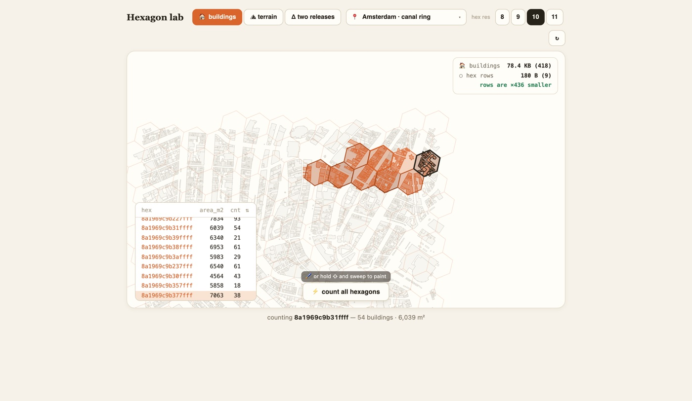

Your filesystem deserves a renderer.
Looking at a file should cost one click. That's the whole product.

Why it exists
- The browser is the best rendering engine ever shipped.
- Python is the best data runtime ever assembled.
- Between them: virtualenvs, kernels, build steps, dashboards that want your data uploaded first.
- Fused Render keeps the two engines and deletes the ceremony. No project files, no import step, no account.
The ethos
- Local first, actually. Binds 127.0.0.1 only. Nothing phones home. Works on a plane.
- Files are the database. Nothing ingested, synced, or copied. The app is a lens on your filesystem.
- HTML is the canvas, Python is the engine. Views and data are plain files you can read, edit, and version.
- No magic. Built-in viewers use the same primitives you get. Anything we do, you can override.
- State lives in the URL. Refresh-proof, bookmarkable. Sharing a view is copying a link.
How it works
- A local server walks your filesystem. FastAPI on 127.0.0.1; the browser is your file explorer.
- Extensions map to viewers. Parquet gets a table + query engine, GeoTIFF a map, GLB a 3D scene.
- Every .html gets a runtime. A small injected bridge:
fused.runPython(file, params), withfused.paramssynced to the URL. - Python runs in worker subprocesses. Files declare their own deps (PEP 723); results stream back as JSON.
- Views are just file pairs.
.htmlnext to.py= a live app. No bundler, no build.
sine.py
def main(freq: float = 2.0):
import math
return [math.sin(freq * x / 20) for x in range(200)]sine.html
const data = await fused.runPython("sine.py", fused.params);
draw(data); // freq rides in the URLYour files~/data/*.parquet · *.tif · *.glb
↓ walks
✦ Fused Render127.0.0.1 · local server
↓ renders
Browserviews · maps · tables · state in the URL
⇅ runPython
Python workerssubprocess · PEP 723 · JSON back
Templates all the way down
- The 40+ built-in viewers are just renderable HTML pages shipped with the app. Not privileged code.
- Drop your own template in
~/.fused-render, register it for an extension: your viewer opens that file type, ahead of or instead of ours. - Custom parquet viewer, a format we've never heard of, an internal report format. Same primitives, your rules.
.parquet→table + query engine
.tif→map with overlays
.glb→3D scene
.pdf→reader + studio
.yours→your template, your rules
Batteries included
- The app bundles Python, the fused CLI, and an offline wheelhouse: pandas, duckdb, polars, geopandas, matplotlib and friends.
- Common-stack views work with no network and no install step.